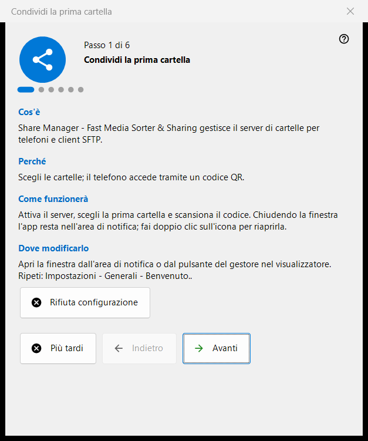
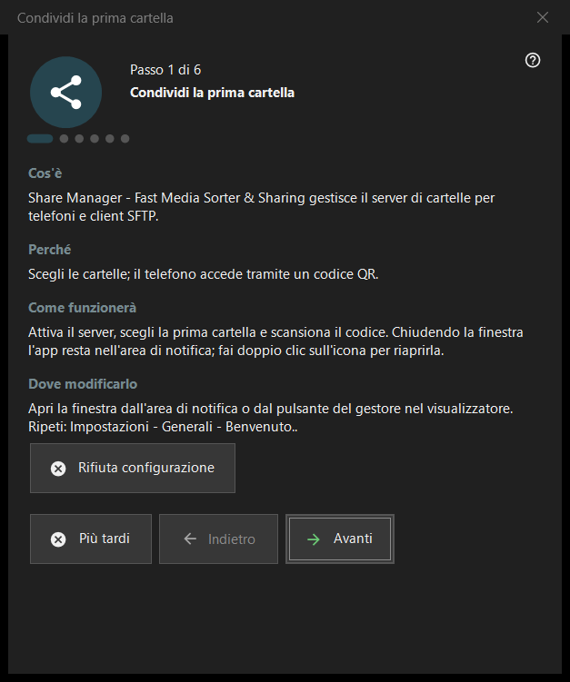

Condividi la prima cartella
Scopo
Una procedura guidata in sei passi che porta da zero a una cartella servita al telefono: attiva il server, sceglie la prima cartella, imposta la porta e le opzioni di base e termina con un controllo dello stato. Si apre al primo avvio di Share Manager e può essere ripetuta dalle impostazioni.


In questo ordine
- Leggi l'introduzione e premi «Avanti».
- Nel passo «Attiva il server» premi il pulsante una volta e conferma la richiesta di amministratore.
- Scegli la prima cartella e le sue opzioni.
- Mantieni o cambia la porta.
- Imposta la lingua, l'avvio e le opzioni della rete locale.
- Nell'ultima pagina controlla lo stato, apri il codice QR e premi «Fine».
Gli elementi
Passi e pulsanti
Il piè di pagina mostra «Passo N di 6». «Indietro» e «Avanti» spostano tra le pagine, «Avanti» diventa «Fine» nell'ultima pagina, «Più tardi» chiude la procedura e conserva quanto hai già confermato, e «Rifiuta configurazione» la chiude definitivamente. Ogni pagina ha quattro brevi blocchi: «Cos'è», «Perché», «Come funzionerà» e «Dove modificarlo».
Attiva il server
Fino a questo passo il server è disattivato. Il pulsante di attivazione chiede una volta i diritti di amministratore e aggiunge una regola di Windows Firewall per il programma. Se annulli la richiesta il server resta disattivato e puoi riprovare; se è già attivo, la pagina indica che non serve altra elevazione.
Prima cartella
Scegli una cartella, poi il suo nome, il profilo e l'accesso. «Aggiungi ora la prima risorsa..» apre la procedura guidata della risorsa. Per continuare serve almeno una cartella. Le impostazioni vengono inviate al server e le cartelle restano modificabili nell'elenco della finestra principale.
Porta
«Scelta dal sistema» assegna una porta una sola volta e la conserva; «Porta fissa:» ti permette di digitare un numero tuo, per esempio per l'inoltro delle porte sul router. Il numero è scritto in ogni codice QR e in ogni file .fmscfg, quindi cambiarlo in seguito rende inutilizzabili i codici già consegnati. La regola del firewall appartiene al programma, non alla porta.
Impostazioni di base
«Lingua dell'interfaccia», «Avvia all'accesso a Windows», «Apri la finestra del gestore all'avvio» e «Solo rete locale (senza accesso da Internet)». La modalità rete locale disattiva l'inoltro delle porte e l'indirizzo internet. L'opzione di avvio della versione dello Store si gestisce nelle impostazioni di Windows.
Fine
L'ultima pagina controlla il server e le cartelle scelte e mostra il risultato; uno stato verde significa che una condivisione è davvero in funzione con accesso alle cartelle. «Codice QR per il telefono» apre il codice e «Aggiorna» ripete il controllo. Se lo stato richiede attenzione, correggi la causa nella finestra principale o torna al passo della cartella.
Ripetere la procedura guidata
Impostazioni - Generali - «Benvenuto..» apre un menu con «Ripeti configurazione cartelle», che avvia di nuovo questa procedura.
Impostazioni del gestore · Impostazioni condivisione SFTP · Impostazioni server di scambio